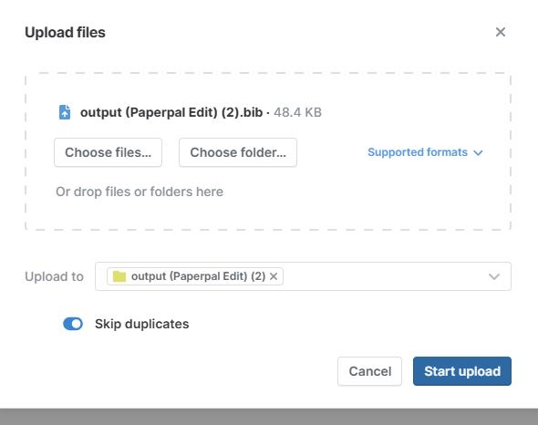
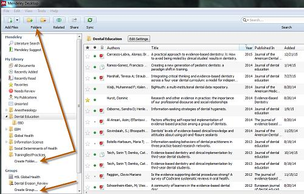
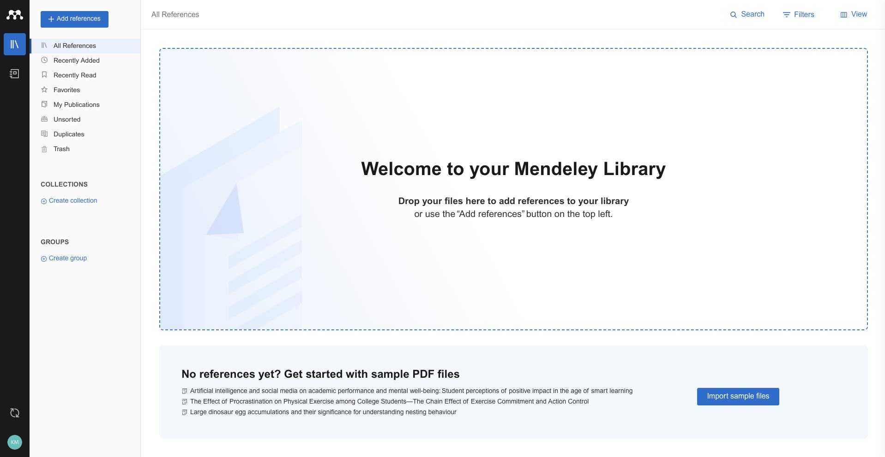
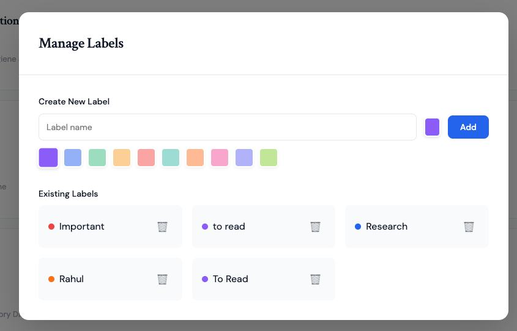
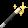
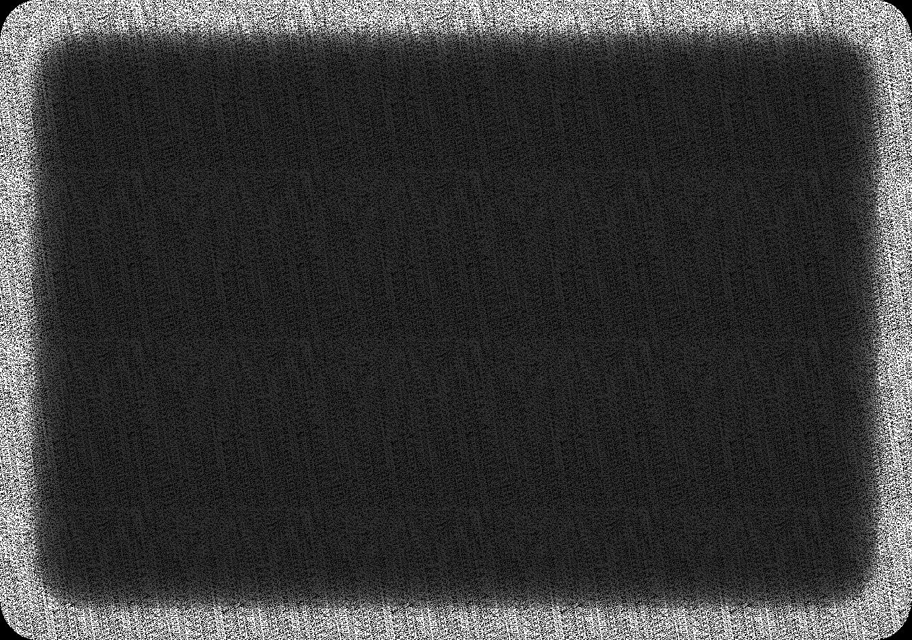
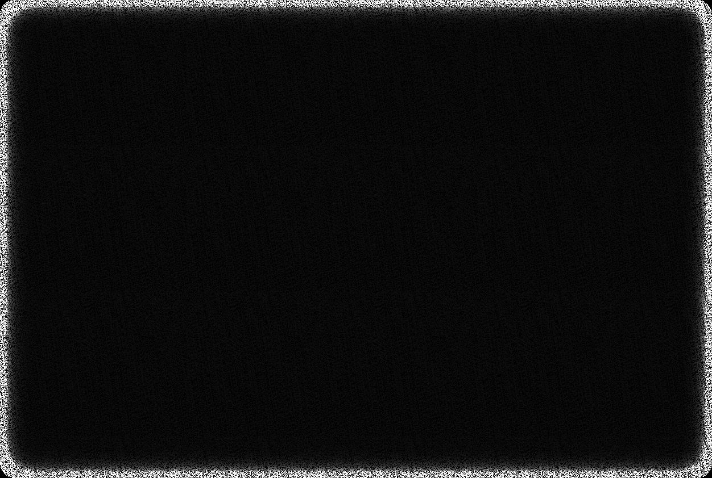

Case Study
Paperpal Reference Library
A reference management experience for academics that converts uploaded files into structured citations, exports them to formats like BibTeX, and syncs with tools such as Zotero so citations can be reused across Paperpal, ChatPDF, Word, and Docs.
Why
Researchers were collecting papers across multiple tools, but had no single place to turn those files into reusable citations. Exporting references for different formats and keeping them synced with reference managers created fragmented workflows and repeated manual work.
- Uploading papers did not automatically produce structured references.
- Export formats like BibTeX and RIS required manual cleanup.
- Reference managers (e.g., Zotero) fell out of sync with the library.
- Citations couldn’t be reused consistently across Paperpal, ChatPDF, Word, and Docs.
Goal: make reference creation, export, and reuse feel like one continuous flow rather than a set of disconnected steps.
What
Research mapped how academics store and reuse references across tools. The key outcome was a unified library that converts uploads into references, supports multiple export formats, and keeps external sync reliable.
- Auto-generate structured references from uploaded files.
- Enable exports in BibTeX, RIS, and other citation formats.
- Sync references and files with Zotero.
- Surface library citations across Paperpal, ChatPDF, Word, and Docs.
Competitor Analysis
We reviewed adjacent reference managers and research tools to understand how they handle ingestion, citation exports, and sync. The analysis highlighted gaps in automated reference creation and consistency across tools, which informed the reference library’s export and sync priorities.




How
The solution focuses on three moments: ingestion, reference editing, and reuse. We built clear status states for parsing, a review/edit pass for reference accuracy, and a unified export/sync layer to keep external tools updated.
- Upload → parse → reference creation with progress states.
- Editable reference cards to fix metadata and author order.
- Export formats and Zotero sync from a single action panel.
- Consistent citation picker used across Paperpal, ChatPDF, and Docs.
Screens & Files
- Reference library dashboard (upload + status states)
- Reference detail view (edit + export)
- Zotero sync flow
Design file: add link once you’re ready to share.



